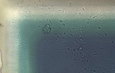
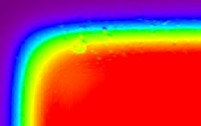
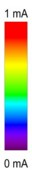

参考样品
样品：
WITec光电流参考样品
确保以下设置已正确应用：
Femto放大器增益设为10
4
（小开关拨至"L"位置）
其他开关：GND/Bias设为GND，10Hz/FBW设为FBW，AC/DC设为DC
532 nm激光，功率约7 mW
20x物镜



图1：左：视频图像，右：电流分布
在视频图像中可以清晰地识别出活性区（暗色）、过渡区和边框（亮色）。
根据这些区域，测量的光电流显示出预期行为。边框处为0 mA，活性区中心处可达约1 mA。图1显示了左上边缘的示例。
备注：光电二极管由约170 μm的透明涂层和下方的硅层组成，焦平面不太关键。